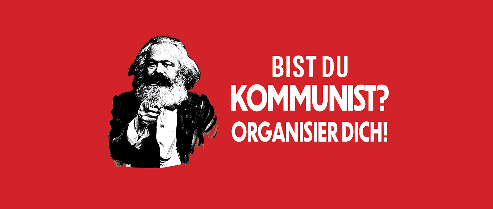

Beitritt
Möchtest du Teil der revolutionären Bewegung werden und aktiv an der Veränderung der Gesellschaft mitwirken? Der Beitritt zur Revolutionären Kommunistischen Partei (RKP) bietet dir die Möglichkeit, gemeinsam mit anderen Genossinnen und Genossen für eine gerechte, solidarische und klassenlose Gesellschaft zu kämpfen. Als Mitglied der RKP unterstützt du unsere politischen Ziele und trägst aktiv zu unserer Arbeit bei, sei es durch politische Bildung, die Teilnahme an Aktionen oder durch den Aufbau von internationalen Solidaritätsnetzwerken. Wir bieten dir eine Plattform, um deine Ideen einzubringen, dich mit anderen Aktivisten auszutauschen und an der Gestaltung der revolutionären Bewegung mitzuwirken. Wenn du dich für den Beitritt interessierst, findest du hier alle nötigen Informationen und kannst den ersten Schritt auf dem Weg zu einer gerechteren Zukunft tun. Gemeinsam können wir den Kapitalismus überwinden und eine neue Welt erschaffen. Trete der RKP bei und werde Teil des Kampfes für die Befreiung der Arbeiterklasse!